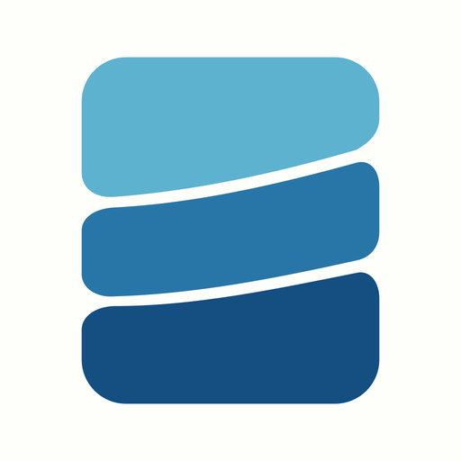
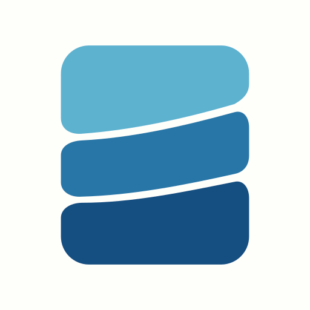
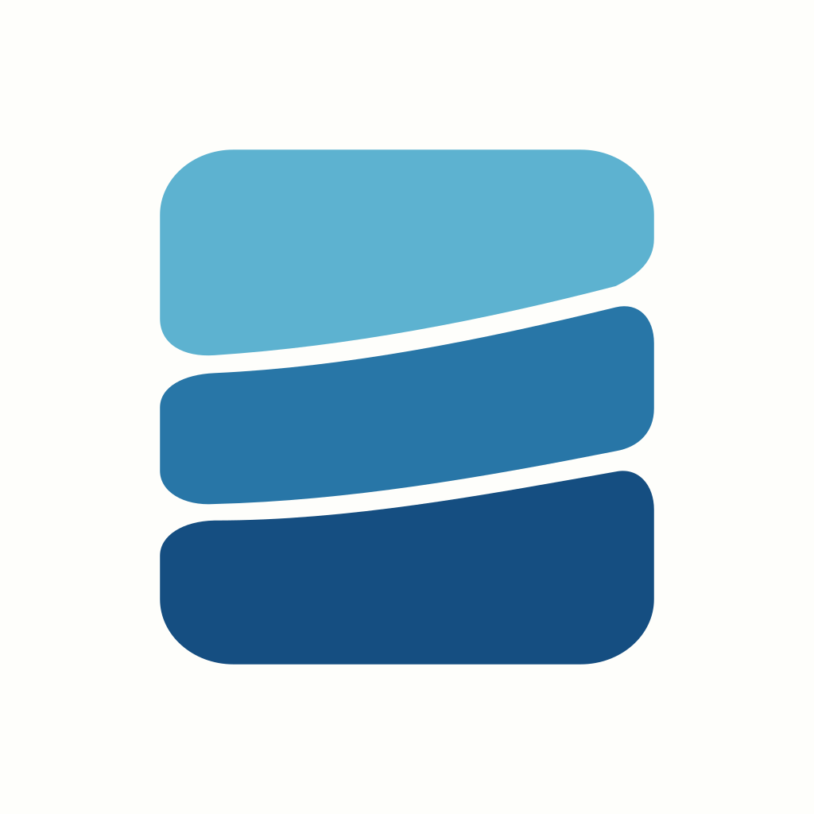
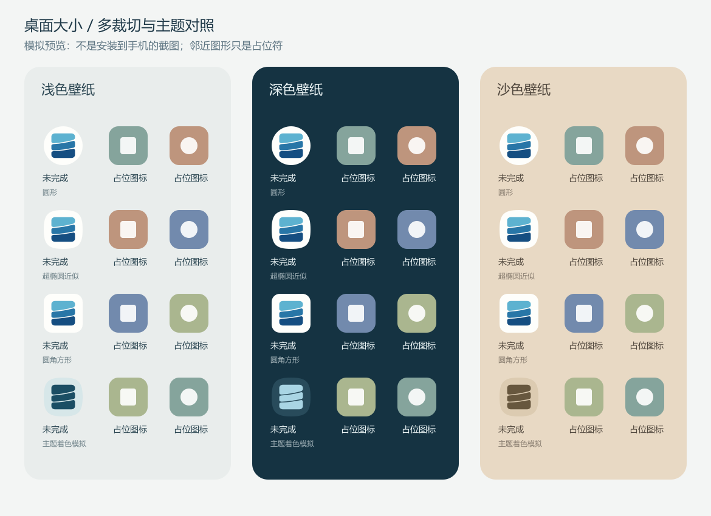
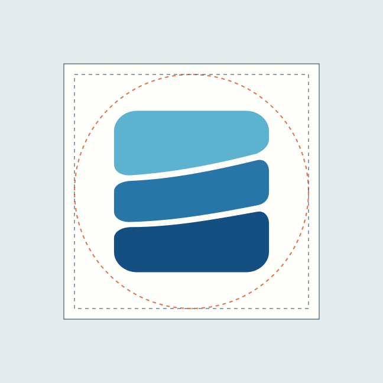

未完成 · C 存片 / 近方形 v2
主体宽度缩小 6%，适度压低总高度，让宽高比从 0.86∶1 接近 0.96∶1。三层海蓝、排列方式与开放曲线保留。
矢量候选 v2 · 旧版保留 · 未替换 App · 未安装 · 未定稿

较修长，桌面占比偏满

用于区分大小变化与比例变化

缩小 + 近方形，间隙单独补偿
实际桌面大小
以下按 48px / 64px 原尺寸显示；请使用 100% 页面缩放。浏览器像素不等于每台手机的最终桌面尺寸。
上一版
48 / 64px
48 / 64px
近方形新版
48 / 64px
48 / 64px
单色矢量
48 / 64px
48 / 64px
多裁切 / 壁纸 / 主题着色
模拟预览，不是真机截图。超椭圆为近似形状；邻近图形为占位符，不能据此判断实际品牌混淆。

三层海蓝
浅水 #5DB2D0中水 #2876A7深水 #154E81
编辑与平台资源
形状源 SVG · 108dp 主文件 · 单色层 · 静态检查数据 · 候选包说明


以下安全区线框只用于检查，不出现在发布图标中。

平台依据：Android 自适应图标官方指南。原生候选资源保存在 android-candidate/res/，没有修改当前 App 的图标引用。
本轮只调整桌面大小和近方形比例，保留上一版，不验证用户是否能猜出 App 名字。先审核新版大小与间隙，再在获准替换图标后做真实桌面检查。